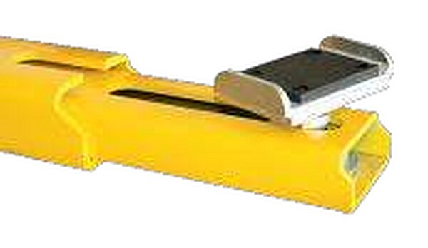
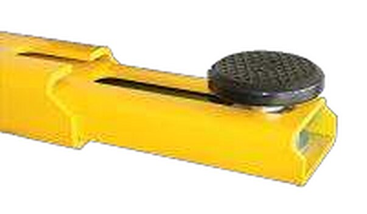
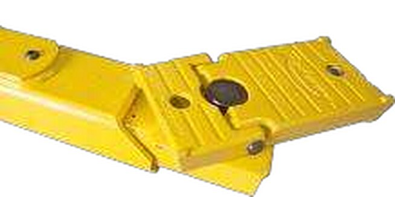

Elevador de 2 columnas asimétrico
Rotary Lift SPOA10
Capacidad4535 kg
Elevación1962 mm
Techo necesario3655 mm
Alimentación208/230 V

Para autos y utilitarios de hasta 4535 kg (10.000 lb), con piso libre y máxima apertura de puertas.
- AsimétricoColumnas giradas para abrir más las puertas con el vehículo arriba.
- Piso libreSin travesaño que obstruya carros, gatos y bandejas.
- Brazos TRIO™Tres etapas y adaptadores intercambiables.
- Triple seguridadHidráulica, traba mecánica y sensor superior de sobrealtura.
- Poco mantenimientoSin tornillos sinfín, cremalleras ni tuercas de bronce.
- Columnas «doble S»Un cilindro hidráulico en cada columna.
Adaptadores intercambiables



Se incluye un modelo; el resto se vende por separado. Certificación ALI: modelo SPOA10X.
Instalación en tu taller. Contamos con un equipo de técnicos para la colocación de tu equipo, en todo el país. Ver ficha del producto en la web ↗